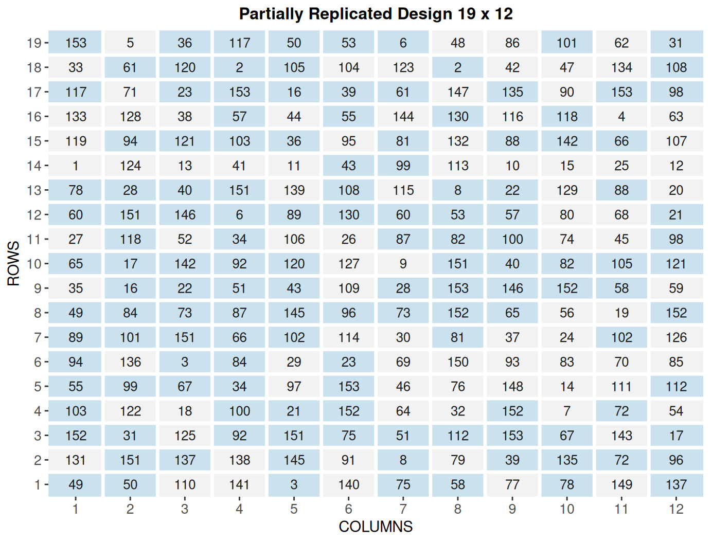
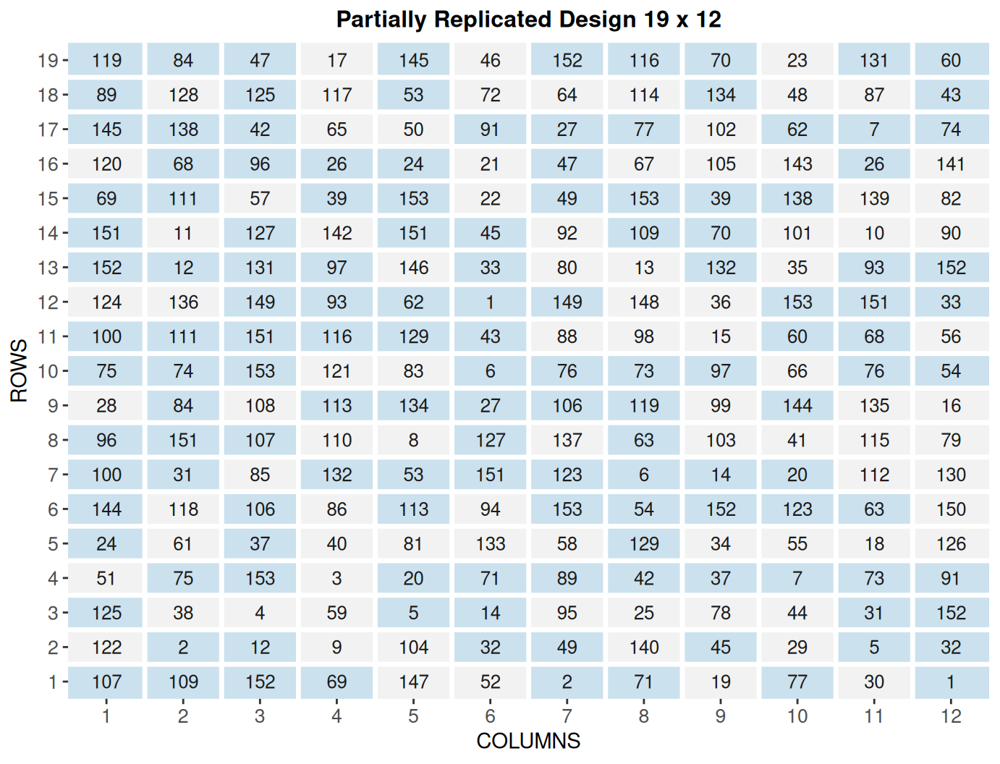

Optimized Multi-Location p-rep
This vignette shows how to generate an optimized multi-location partially replicated (p-rep) design using both the FielDHub Shiny App and the scripting function multi_location_prep() from the FielDHub R package.
Overview¶
Partially replicated (p-rep) designs are commonly employed in early generation field trials. This type of design is characterized by replication of a portion of the entries, with the remaining entries only appearing once in the experiment. Commonly, the part of treatments with reps is due to an arbitrary decision by the research, also in some cases, it is due to technical reasons. The replication ratio is typically 1:4 (Cullis 2006), which means that the portion of treatment repeated twice is p = 25%. However, the design can be adapted to meet specific needs by adjusting the values of $p$ and the level of replication. For example, standard varieties (checks) may be included with higher levels of replication than test lines.
In FielDHub, the optimized multi-location p-rep design employs the principles of incomplete block designs (IBD) to determine the distribution of replicated and non-replicated treatments across multiple locations.
Optimization¶
Across Location¶
The function multi_location_prep() uses the incomplete blocks design approach (Edmondson 2020) to optimize the allocation of replicated and un-replicated treatments across the environments. The search is FielDHub’s own compiled block-design search, and it keeps each entry’s copies spread as evenly as possible over the locations (see ?do_optim).
Within Location¶
Each partially replicated (p-rep) design location undergoes an optimization process that involves the following procedure:
Given a matrix $X$ of integers (p-rep design within location), we want to ensure that the distance between any two occurrences of the same treatment is at least a distance $d$. More specifically, we want to modify $X$ to ensure that no treatments appear twice within a distance less than $d$ in the resulting matrix.
The goal of the optimization process is to find a modified matrix that satisfies this constraint while maximizing some measure of deviation from the original matrix $X$. In this case, the measure of deviation is the pairwise Euclidean distance between occurrences of the same treatment. The process is done by the function swap_pairs() that uses a heuristic algorithm that starts with a distance of $d = 3$ between pairs of occurrences of the same treatment, and increases this distance by $1$ and repeats the process until either the algorithm no longer converges or the maximum number of iterations is reached.
The algorithm works by first identifying all pairs of occurrences of the same treatment that are closer than $d$. For each such pair, the function selects a random occurrence of a different integer that is at least $d$ away, and swaps the two occurrences. This process is repeated until no further swaps can be made that increase the pairwise Euclidean distances between occurrences of the same treatment.
Toy Example¶
Consider a p-rep design where ten treatments are replicated twice and 40 only once. The matrix (field layout) for this experiment has 6 rows and 10 columns.
$X =$
[,1] [,2] [,3] [,4] [,5] [,6] [,7] [,8] [,9] [,10]
[1,] 21 40 17 25 26 3 11 31 36 6
[2,] 5 5 33 8 48 29 43 23 1 45
[3,] 41 27 38 39 7 28 14 22 24 4
[4,] 4 47 18 7 2 35 6 20 12 46
[5,] 3 15 9 34 49 50 2 10 42 8
[6,] 32 16 19 9 10 13 37 1 44 30
In this initial p-rep design, we notice that the two instances of treatment 5 are positioned next to each other. Additionally, treatments 7 and 9 are also situated in adjacent cells. These suboptimal allocations could lead to issues or inaccurate results when analyzing the data from this experiment due to the short distance between replicated treatments and the likely spatial correlation between them.
The following table shows the pairwise distances for the replicated treatments
geno Pos1 Pos2 DIST rA cA rB cB
1 5 2 8 1.000000 2 1 2 2
2 7 22 27 1.414214 4 4 3 5
3 9 17 24 1.414214 5 3 6 4
4 2 28 41 2.236068 4 5 5 7
5 10 30 47 3.162278 6 5 5 8
6 1 48 50 4.123106 6 8 2 9
7 6 40 55 4.242641 4 7 1 10
8 3 5 31 6.403124 5 1 1 6
9 8 20 59 6.708204 2 4 5 10
10 4 4 57 9.055385 4 1 3 10
Swap pairs¶
We can improve the efficiency of the design by swapping the treatments that are close and next to each other by using the function swap_pairs() from FielDHub R package.
library(FielDHub)
B <- swap_pairs(X, starting_dist = 3)
The new matrix or the optimized p-rep design is,
print(B$optim_design)
[,1] [,2] [,3] [,4] [,5] [,6] [,7] [,8] [,9] [,10]
[1,] 21 7 16 42 26 1 11 2 6 31
[2,] 2 13 10 46 48 29 47 23 10 5
[3,] 41 9 24 20 32 28 37 7 9 4
[4,] 4 12 6 5 22 35 18 14 38 34
[5,] 3 15 8 45 17 50 25 33 27 8
[6,] 1 39 19 36 40 43 49 3 44 30
The distances for each pairwise of treatments are,
print(B$pairwise_distance)
geno Pos1 Pos2 DIST rA cA rB cB
1 10 14 50 6.000000 2 3 2 9
2 5 22 56 6.324555 4 4 2 10
3 7 7 45 6.324555 1 2 3 8
4 6 16 49 6.708204 4 3 1 9
5 8 17 59 7.000000 5 3 5 10
6 9 9 51 7.000000 3 2 3 9
7 1 6 31 7.071068 6 1 1 6
8 2 2 43 7.071068 2 1 1 8
9 3 5 48 7.071068 5 1 6 8
10 4 4 57 9.055385 4 1 3 10
As we can see, the minimum distance that the algorithm reached is 6. This means no treatments appear twice within a distance less than 6 in the resulting prep design. It is a considerable improvement from the first version of the p-rep design
The FielDHub function multi_location_prep() does internally all the optimization process and uses the function swap_pairs() to maximize the distance between replicated treatments.
Use case (Multi-Location P-rep Design)¶
Suppose there is a plant breeding field trial with 150 entries to be tested across five environments, where up to seven replications of each entry are allowed. Additionally, the project includes three checks; each replicated six times. We can generate an optimized multi-location partially replicated design using these parameters. This strategy guarantees that all treatments are present in all environments but in different amounts of replications.
We can generate this design using the FielDHub Shiny app and the FielDHub multi_location_prep() standalone function in R.
Running the Shiny App¶
To launch the app you need to run either
FielDHub::run_app()
or
library(FielDHub)
run_app()
1. Using the FielDHub Shiny App¶
Once the app is running, click the tab Partially Replicated Design and select Optimized Multi-Location p-rep from the dropdown.
Then, follow the following steps where we will show how to generate an optimized partially replicated design.
Inputs¶
-
Import entries’ list? Choose whether to import a list with entry numbers and names for genotypes or treatments.
-
If the selection is
No, that means the app is going to generate synthetic data for entries and names of the treatment/genotypes based on the user inputs. -
If the selection is
Yes, the entries list must fulfill a specific format and must be a.csvfile. The file must have the columnsENTRYandNAME. TheENTRYcolumn must have a unique entry integer number for each treatment/genotype. The columnNAMEmust have a unique name that identifies each treatment/genotype. BothENTRYandNAMEmust be unique, duplicates are not allowed. In the following table, we show an example of the entries list format.
-
| ENTRY | NAME |
|---|---|
| 1 | Genotype1 |
| 2 | Genotype2 |
| 3 | Genotype3 |
| 4 | Genotype4 |
| 5 | Genotype5 |
| 6 | Genotype6 |
| 7 | Genotype7 |
| 8 | Genotype8 |
| 9 | Genotype9 |
| 10 | Genotype10 |
-
Enter the number of entries in the Input # of Entries box as a comma separated list. In our example we will have 150 entries, so we enter 150 in the box for our sample experiment.
-
Select whether or not the experiment will contain checks under the Include checks? option. The example experiment does, so set this to
Yes. -
Once we select
Yeson the above option, two more boxes appear, the first being Input # of Checks where we set how many checks to include in the experiment. In our case this is 3. -
Next to this option we have Input # Check’s Reps, where we set the number of replications for each check respectively in a comma separated list. We are replicating each of the 3 checks 6 times, so enter
6,6,6in this box. -
Enter the number of locations in Input # of Locations. We will run this experiment over 5 locations, so set Input # of Locations to 5.
-
Set the total number of replications of the entries over all locations in the
# of Copies Per Entrydropdown box. For this example experiment, set this to 7. -
Select
serpentineorcartesianin the Plot Order Layout. For this example we will use the defaultserpentinelayout. -
To ensure that randomizations are consistent across sessions, we can set a random seed in the box labeled Random Seed. In this example, we will set it to
2456. -
(Optional) Enter the starting plot number in the Starting Plot Number box. Since the experiment has multiple locations, you must enter a comma separated list of numbers the length of the number of locations for the input to be valid. In this example, we will set it as
1,1001,2001,3001,4001. -
(Optional) Enter the location names in the Input Location Name box. Since the experiment has six locations, you must enter a comma separated list of strings for the names of the environments. In this example, we will set it as
LOC1,LOC2,LOC3,LOC4,LOC5.
Once we have entered the information for our experiment on the left side panel, click the Run! button to run the design. You will then be prompted to select the dimensions of the field from the list of options in the dropdown in the middle of the screen with the box labeled Select dimensions of field. In our case, we will select 12 x 19. Click the Randomize! button to randomize the experiment with the set field dimensions and to see the output plots. If you change the dimensions again, you must re-randomize.
If you change any of the inputs on the left side panel after running an experiment initially, you have to click the Run and Randomize buttons again, to re-run with the new inputs.
Outputs¶
After you run a Optimized Multi-Location P-rep Design in FielDHub and set the dimensions of the field, there are several ways to display the information contained in the field book. The first tab, Get Random, shows the option to change the dimensions of the field and re-randomize, as well as the genotype allocation matrix generated for the optimized p-rep design, which displays the replications of each genotype over each location, much like the matrix generated in sparse allocation.
Randomized Field¶
The Randomized Field tab displays a graphical representation of the randomization of the entries in a field of the specified dimensions. The replicated entries are the green colored cells, with the which cells appearing only once in the location. The display includes numbered labels for the rows and columns. You can copy the field as a table or save it directly as an Excel file with the Copy and Excel buttons at the top.
Plot Number Field¶
On the Plot Number Field tab, there is a table display of the field with the plots numbered according to the Plot Order Layout specified, either serpentine or cartesian. You can see the corresponding entries for each plot number in the field book. Like the Randomized Field tab, you can copy the table or save it as an Excel file with the Copy and Excel buttons.
Field Book¶
The Field Book displays all the information on the experimental design in a table format. It contains the specific plot number and the row and column address of each entry, as well as the corresponding treatment/genotype on that plot. This table is searchable, and we can filter the data in relevant columns.
2. Using the FielDHub function: multi_location_prep().¶
You can run the same design with the function multi_location_prep() in the FielDHub package.
First, you need to load the FielDHub package typing,
library(FielDHub)
Then, you can enter the information describing the above design like this:
optim_multi_prep <- multi_location_prep(
lines = 150,
l = 5,
copies_per_entry = 7,
checks = 3,
rep_checks = c(6,6,6),
plotNumber = c(1,1001,2001,3001,4001),
locationNames = c("LOC1", "LOC2", "LOC3", "LOC4", "LOC5"),
seed = 2456
)
Details on the inputs entered in multi_location_prep() above¶
The description for the inputs that we used to generate the design,
lines = 150is the number of entries in the field.l = 5is the number of locations.copies_per_entry = 7is the number of copies of each entry.checks = 3is the (optional) number of checks.rep_checks = c(6,6,6)is the (optional) number of replications of each check, in a vector the length of the number of checks.locationNames = c("LOC1", "LOC2", "LOC3", "LOC4", "LOC5")are optional names for the locations.seed = 2456is the random seed to replicate identical randomizations.
Set allow_fillers = TRUE to consider field dimensions with a small number of filler plots when a location has no suitable exact dimensions. The default is FALSE, and the genotype allocation across locations is unchanged when fillers are enabled.
Print optim_multi_prep object¶
To print a summary of the information that is in the object optim_multi_prep, we can use the generic function print().
The multi_location_prep() function returns all the same objects as in partially_replicated() and in addition list_locs, allocation, and size_locations. The object list_locs is a list of data frames. Each data frame has three columns; ENTRY, NAME and REPS with the information to randomize to each environment. The object allocation is the binary allocation matrix of genotypes to locations, and size_locations is a data frame with a column for each location and a row indicating the size of the location (number of field plots).
For example, we can display the allocation object. Let us print the first ten genotypes allocation.
print(head(optim_multi_prep$allocation, 10))
LOC1 LOC2 LOC3 LOC4 LOC5
1 1 2 1 1 2
2 2 1 1 1 2
3 2 1 2 1 1
4 1 2 1 2 1
5 1 1 1 2 2
6 2 1 1 1 2
7 1 1 2 1 2
8 2 1 2 1 1
9 1 2 2 1 1
10 1 2 2 1 1
Let us add two new columns to the allocation table. We can add the number of copies by genotype; it should be 7 for all of them. We can also add the average allocation by genotype. Each treatment will appear 1.4 times in average.
| LOC1 | LOC2 | LOC3 | LOC4 | LOC5 | Copies | Avg | |
|---|---|---|---|---|---|---|---|
| Gen-1 | 1 | 2 | 1 | 1 | 2 | 7 | 1.4 |
| Gen-2 | 2 | 1 | 1 | 1 | 2 | 7 | 1.4 |
| Gen-3 | 2 | 1 | 2 | 1 | 1 | 7 | 1.4 |
| Gen-4 | 1 | 2 | 1 | 2 | 1 | 7 | 1.4 |
| Gen-5 | 1 | 1 | 1 | 2 | 2 | 7 | 1.4 |
| Gen-6 | 2 | 1 | 1 | 1 | 2 | 7 | 1.4 |
| Gen-7 | 1 | 1 | 2 | 1 | 2 | 7 | 1.4 |
| Gen-8 | 2 | 1 | 2 | 1 | 1 | 7 | 1.4 |
| Gen-9 | 1 | 2 | 2 | 1 | 1 | 7 | 1.4 |
| Gen-10 | 1 | 2 | 2 | 1 | 1 | 7 | 1.4 |
We can manipulate the optim_multi_prep object as any other list in R. We can first display the design parameters for the randomizations with the following code:
print(optim_multi_prep)
which outputs:
Multi-Location Partially Replicated Design
Replications within location:
LOCATION Replicated Unreplicated
1 LOC1 63 90
2 LOC2 63 90
3 LOC3 63 90
4 LOC4 63 90
5 LOC5 63 90
Information on the design parameters:
List of 10
$ rows : num [1:5] 19 19 19 19 19
$ columns : num [1:5] 12 12 12 12 12
$ min_distance : num [1:5] 2 2 1 2 3
$ incidence_in_rows : num [1:5] 6 4 3 4 7
$ locations : num 5
$ planter : chr "serpentine"
$ experimental_plots: Named num [1:5] 228 228 228 228 228
..- attr(*, "names")= chr [1:5] "LOC1" "LOC2" "LOC3" "LOC4" ...
$ field_capacity : num [1:5] 228 228 228 228 228
$ fillers : num [1:5] 0 0 0 0 0
$ seed : num 2456
10 First observations of the data frame with the partially_replicated field book:
# A tibble: 10 × 11
ID EXPT LOCATION YEAR PLOT ROW COLUMN REP CHECKS ENTRY TREATMENT
<int> <chr> <chr> <chr> <dbl> <int> <int> <int> <dbl> <dbl> <chr>
1 1 PrepExpt LOC1 2026 1 1 1 1 49 49 G-49
2 2 PrepExpt LOC1 2026 2 1 2 1 50 50 G-50
3 3 PrepExpt LOC1 2026 3 1 3 1 0 110 G-110
4 4 PrepExpt LOC1 2026 4 1 4 1 0 141 G-141
5 5 PrepExpt LOC1 2026 5 1 5 1 3 3 G-3
6 6 PrepExpt LOC1 2026 6 1 6 1 0 140 G-140
7 7 PrepExpt LOC1 2026 7 1 7 1 75 75 G-75
8 8 PrepExpt LOC1 2026 8 1 8 1 58 58 G-58
9 9 PrepExpt LOC1 2026 9 1 9 1 0 77 G-77
10 10 PrepExpt LOC1 2026 10 1 10 1 78 78 G-78
Access to optim_multi_prep output¶
All objects are accessible by the $ operator, i.e. optim_multi_prep$layoutRandom[[1]] for LOC1, optim_multi_prep$fieldBook for the fieldBook with all locations.
optim_multi_prep$fieldBook is a data frame containing information about every plot in the field, with information about the location of the plot and the treatment in each plot. As seen in the output below, the field book has columns for ID, EXPT, LOCATION, YEAR, PLOT, ROW, COLUMN, CHECKS, ENTRY, and TREATMENT.
Let us see the first 10 rows of the field book for this experiment.
field_book <- optim_multi_prep$fieldBook
head(field_book, 10)
# A tibble: 10 × 11
ID EXPT LOCATION YEAR PLOT ROW COLUMN REP CHECKS ENTRY TREATMENT
<int> <chr> <chr> <chr> <dbl> <int> <int> <int> <dbl> <dbl> <chr>
1 1 PrepExpt LOC1 2026 1 1 1 1 49 49 G-49
2 2 PrepExpt LOC1 2026 2 1 2 1 50 50 G-50
3 3 PrepExpt LOC1 2026 3 1 3 1 0 110 G-110
4 4 PrepExpt LOC1 2026 4 1 4 1 0 141 G-141
5 5 PrepExpt LOC1 2026 5 1 5 1 3 3 G-3
6 6 PrepExpt LOC1 2026 6 1 6 1 0 140 G-140
7 7 PrepExpt LOC1 2026 7 1 7 1 75 75 G-75
8 8 PrepExpt LOC1 2026 8 1 8 1 58 58 G-58
9 9 PrepExpt LOC1 2026 9 1 9 1 0 77 G-77
10 10 PrepExpt LOC1 2026 10 1 10 1 78 78 G-78
Plot field layout¶
For plotting the layout in function of the coordinates ROW and COLUMN in the field book object we can use the generic function plot() as follows. This plots only the first location, but this is indexable by location using the dollar sign operator as well.
Field Layout for Location 1¶
plot(optim_multi_prep, l = 1)

In the figure above, soft blue plots contain replicated entries, and gray plots contain entries that only appear once.
Field Layout for Location 5¶
Also, for example the location five:
plot(optim_multi_prep, l = 5)
